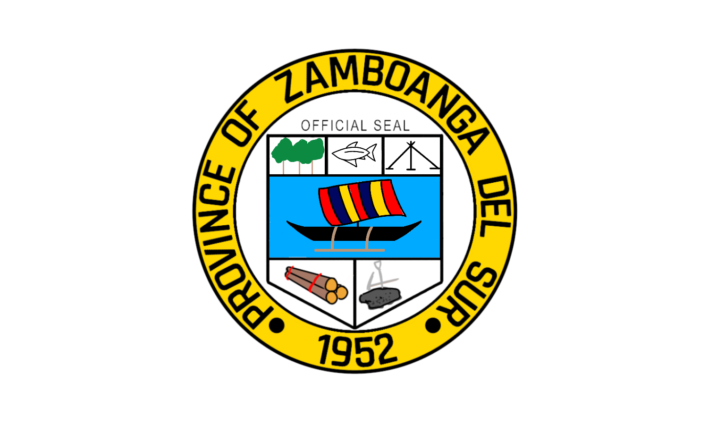
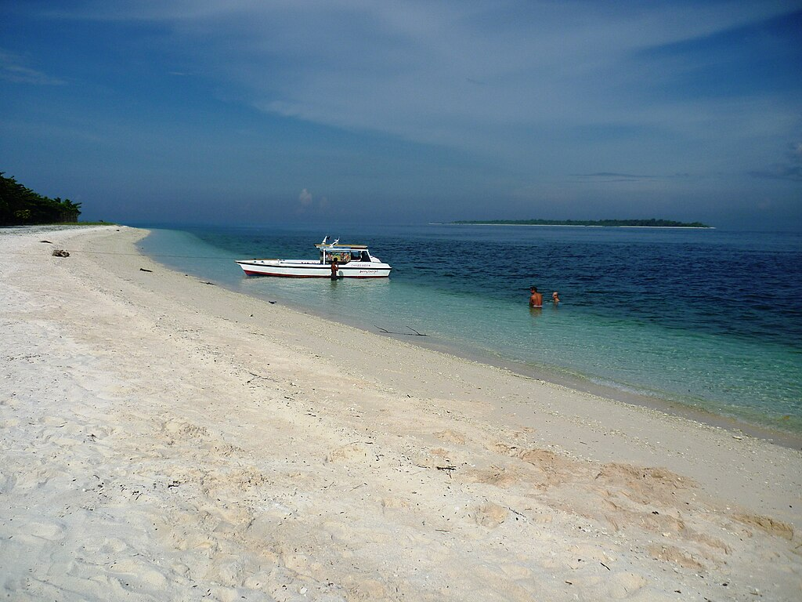

History
Zamboanga del Sur (Cebuano: Habagatang Zamboanga; Subanen: S'helatan Sembwangan/Sembwangan dapit Shelatan; Maguindanaon: Salatan Sambuangan, Jawi: سلاتن سامبواڠن; Filipino: Katimugang Zamboanga), officially the Province of Zamboanga del Sur, is a province in the Philippines located in the Zamboanga Peninsula region in Mindanao. Its capital is the city of Pagadian. Statistically grouped with Zamboanga del Sur is the highly urbanized City of Zamboanga, which is geographically separated and a chartered city and governed independently from the province.
Geography
Zamboanga del Sur covers a total area of 4,499.46 square kilometres (1,737.25 sq mi) occupying the southern section of the Zamboanga peninsula in western Mindanao. It is located at longitude 122° 30" and latitude 7° 15" north. When Zamboanga City is included for statistical purposes, the province's land area is 591,416 hectares (5,914.16 km2). The province is bordered on the north by Zamboanga del Norte, west by Zamboanga Sibugay, northeast by Misamis Occidental, east by Lanao del Norte, southeast by Illana Bay, and south by the Moro Gulf.
Demographics
Population census of Zamboanga del Sur Year Pop. ±% p.a. 1903 49,337 — 1918 15,139 −7.57% 1939 69,798 +7.55% 1948 121,590 +6.36% 1960 345,118 +9.08% 1970 454,283 +2.78% 1975 484,913 +1.32% 1980 561,361 +2.97% 1990 695,741 +2.17% 1995 766,918 +1.84% 2000 836,217 +1.87% 2007 914,278 +1.24% 2010 959,685 +1.78% 2015 1,010,674 +0.99% 2020 1,050,668 +0.77% (excluding Zamboanga City) Source: Philippine Statistics Authority The population of Zamboanga del Sur in the 2020 census was 1,050,668 people, with a density of 230 inhabitants per square kilometre or 600 inhabitants per square mile. When Zamboanga City is included for statistical purposes, the province's population is 2,027,902 people, with a density of 317/km2

TOURIST AND ATTRACTIONS
Here is a comprehensive list of Zamboanga Del Sur tourist spots you should not miss!
Zamboanga Del Sur is slowly hitting the ecotourism spotlight, thanks to its many hidden natural wonders. Cascading waterfalls, jaw-dropping mountain views, primeval forests, and pristine beaches are among the must-see attractions here.
But there is more to these. The province is also rich in culture and history. You’ll learn a lot about the different indigenous groups whose culture remains despite the pressures of modernization.
If you’re planning to visit, here are the must-see attractions in Zamboanga Del Sur.
Universities & Colleges
Southern Mindanao Colleges
Article
Talk
Read
Edit
View history
Tools
From Wikipedia, the free encyclopedia
This article needs additional citations for verification. Please help improve this article by adding citations to reliable sources. Unsourced material may be challenged and removed.
Find sources: "Southern Mindanao Colleges" – news · newspapers · books · scholar · JSTOR (May 2010) (Learn how and when to remove this template message)
Southern Mindanao Colleges
Type Private None Sectarian College
Location Jamesola St., Sta. Lucia District, Pagadian, Zamboanga del Sur, Philippines
Campus 4 Campuses
Colours
Southern Mindanao Colleges also referred to by the acronym SMC, is a non-sectarian private college located at Pagadian, Zamboanga del Sur, Philippines. In terms of student population, SMC has the highest number of students.[1]
Campuses
SMC Annex
SMC Main
SMC Engineering Building
SMC Administration Building
See also
City Commercial Center
List of universities and colleges in the Philippines
References
http://pagadian.org (retrieved May 1, 2010)
External links
mypagadian.com
pagadian.org
vte
University and College in Pagadian City